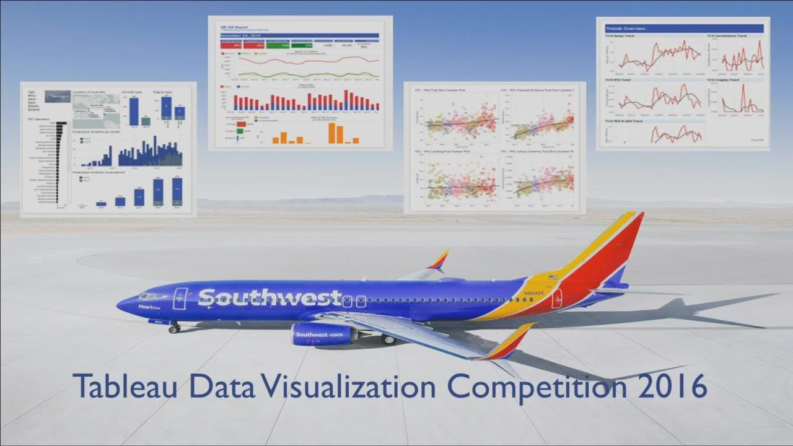

DataScience for the airline industry


From ground operations to air operations air carriers like Southwest Airlines are managing thousands of resources that lead to billions of data points of tracked metrics about the airline operations. The goal of an airliner like for every company is to maximize profits by minimizing cost, maximizing revenues, or both. Then given this paragraph above you may know that there is a goldmine of data to experiment with building models that could help airliners achieve their goals. With the exponential amount of data available, you, a data scientist like me, are more valuable and get more opportunities if you focus on applying your data science skills to one specific industry it can be the financial industry but the airline industry is a very good industry to focus on as data scientist because like the financial industry the airline industry is really highly constrained by operational constraints and highly seeking to produce value for travelers and profit for airline company investors.
The data about the airline industry is there online and accessible for free. For example, each airport publishes quarterly statistics about its volumes of passengers and volume of freight. This data once collected and aggregated can be a really useful dataset to start with for modeling and understanding airport operations. If you enrich it with past flights of airliners which are also available online you could build a model that helps know how each airport is affecting the revenues of each airliner and can also get insights about flights delays for each airport and airline which will allow you to build an index of airlines operational efficiency that could be a useful metric to the airline industry actors. Airliners like Southwest Airlines that have a startup culture could be very interested in knowing about such kind of data science System and this could allow you to land a job in this airline company or be acquired if you have chosen to do it by starting a company or a startup.
I provided an example of such kind of data science solutions that could be a project for you in this article titled Irregular flights tracker systems that you can see below
The airline industry is again filled with operational data to work on but If you decided to work in building data science solutions for the air industry, you would be better if you read some books about airlines operations and airports operations as I did and understands the economics of the airline industry for both passengers business and freight business. Knowing the ins and outs of an industry is something that all data scientists should care about because data science is needed in every company and the more you know about an industry the more you will be able to clearly see how your data science skills can help improve a part of the value chain of this industry or the whole chain.
Because collecting and aggregating the data about the airline industry that you will need will be time-consuming and because processing and preparing data for modeling is the most boring part of the journey of a datascientist, I am thinking about a tech-enabled platform that will aggregate all possible data about the airline industry to make it easy for you to jump on it and build relevant and smart models. Why not make it work like Kaggle and invite airliners to provides data and challenge you for building smart models that could help them for you to get rewards like cash prizes and high paid jobs. If all of this is relevant to you as data science, please let me know.
What is clear and concise is that the airline industry really needs data sciences solutions because almost every industry needs them. Then we data scientists are part of the most needed skill of the world. I hope we will make a difference with these skills that we gathered by learning and working hard with focus and purpose.